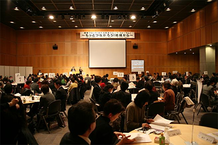

|
|
||
| 消費者庁と関東ブロック実行委員会主催による「平成24年度 地方消費者グループ・フォーラム」（関東ブロック）が2月7日、茨城県つくば市のつくば国際会議場で開催されました。  （写真提供：消費者庁） 地方消費者グループ・フォーラムは、地域の様々な主体が連携・協働し、安心して暮らせる社会に向けて、自立した消費者の活動の広がりをめざし、今年で三回目の開催となりました。昨年に引き続き、「もっとつながろう！地域から」をテーマに、関東・甲信越、新潟県を含む1都9県から消費者団体や生協など77団体と行政関係者約200人が参加しました。 開会にあたって、フォーラム実行委員会の山口康夫実行委員長（NPO法人消費者相談室代表）が、「東日本大震災で被災した茨城県でこの三回目のフォーラムを迎えます。行政、団体、個人がつながった地域コミュニティづくりへ、このフォーラムが新しく社会を創っていく力になれば」と挨拶しました。
消費者庁挨拶で阿南 久長官は、「消費者問題の現場である地域では、福祉や子育てなど様々な課題を抱えているなか、多様な主体が集い、共に連携していくことが必要です。消費者庁と実行委員会の共催で開催するこのフォーラムで、より連携を深め、安全で安心して暮らせる地域社会にしていきましょう」と挨拶しました。 前半、参加団体の活動事例が報告されました。地域での連携・協働の取り組みとして充実ネットちば（千葉県）から「住民と行政で取り組む消費者行政活性化」の報告、NPO法人新潟県消費者協会（新潟県）からは、消費者団体の活動の広がりの事例として「新潟県消費生活サポーター養成講座の歩みと消費生活ネットワーク新潟の活動」が報告されました。事例報告の三番目は、振り込め詐欺や悪質商法の被害防止の寸劇で地域での消費者被害防止啓発に取り組んでいる、劇団どてかぼちゃ（茨城県）による「桜宿犯科帳「股吉親分の悪質商法退治劇」が上演され、会場を賑わせました。 午後は、茨城大学 井上拓也教授が「消費者団体の『いま』と『これから』を考える」と題して講演しました。井上教授は、日本の消費者団体の置かれている状況について、NPO法制定以降、消費者団体訴訟制度、公益法人制度改革、消費者行政強化など環境的状況が好転している一方、人材や資金の減少など課題を抱え、好条件を生かしていないこと、消費者団体と一般の消費者の乖離に触れ、一般の消費者目線に立った「自己革新」と発信力の充実を呼びかけました。その後、小グループに分かれて、地域での取り組み、これからの活動の方向について意見交換・交流を深めました。 ※今回のフォーラム開催にあたっては、関東・甲信越1都9県から消費者や行政関係者など22団体と機関で実行委員会をつくり、開催に向け準備してきました。埼玉県からは、さいたま市と埼玉県消費者団体連絡会が、関東ブロック実行委員会に加わりました。 |
||